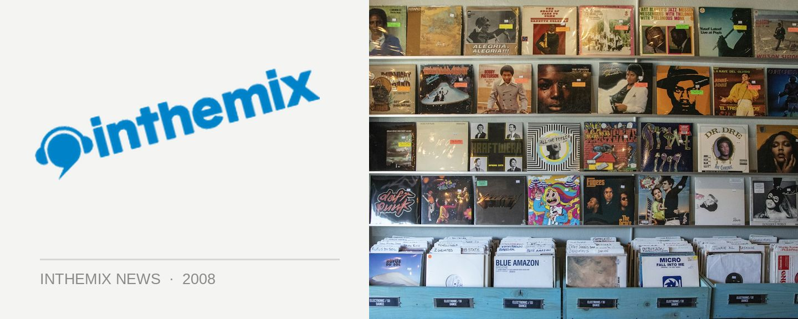

Free download from Bang Gang 12 Inches
This week’s free weekly track comes from the infamous Bang Gang DJ posses and their Bang Gang 12 Inches label, and a tune from one of the stable’s Melbourne signings ZZZ. Lion is the long awaited debut release from the boyfriend/girlfriend tag team duo, and it’s a noisy piano glitch monster that combines the pair’s love of Chopin, French noise and Nintendo pop.
The full release package includes mixes from France’s hottest new producer Breakbot, as well as The Lowbrows and hometown heroes the Bag Raiders. Here you can get a taste of the super fresh original!
CLICK HERE TO DOWNLOAD ITM’S FREE WEEKLY TRACK